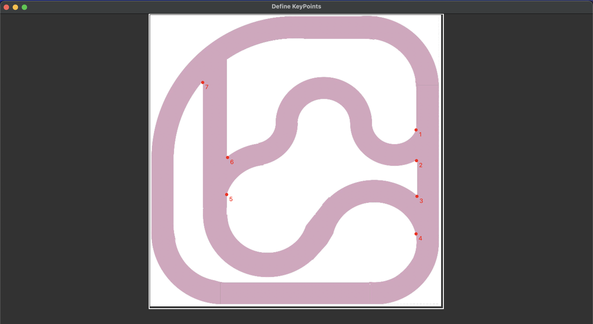

An Affordable, Single-Camera Benchmarking System for Evaluating Autonomous Driving Networks with a modular approach to track, transform, and test your driving models.
Project Description
DriveNetBench is a benchmarking tool designed to evaluate the performance of neural networks
for autonomous driving control. The tool uses a single camera to navigate predefined tracks and
provides metrics to assess the accuracy and efficiency of the neural networks. The main features
of DriveNetBench include:
Detection and tracking of the robot using a YOLO model.
Calculation of path similarity using Dynamic Time Warping (DTW) or Frechet distance.
Extraction and processing of track images to define keypoints and paths.
Visualization of the robot's path and track.
System Overview
Below are three key figures from our DriveNetBench research paper that illustrate
the overall workflow, the system architecture, and the supporting modules used in
the benchmarking process.
Figure 1: DriveNetBench Workflow
This figure shows an overview of the single-camera DriveNetBench workflow:
A robot is recorded by an overhead camera, and DriveNetBench evaluates that footage
using configurable settings and performance metrics (e.g., path similarity, completion time).
Figure 2: DriveNetBench System Architecture
Here is the architecture that processes the camera feed, detects the robot, applies
a perspective transform, and compares the resulting positions against a digital “track.”
DriveNetBench reports path similarity and rotation time, with optional homography-error
checks to ensure calibration.
Figure 3: Supporting Modules
This figure illustrates how DriveNetBench’s “TrackProcessor,” “KeyPointsDefiner,”
“ViewTransformer,” and “Detector” all work together. The TrackProcessor extracts
the centerline route from the digital track; the KeyPointsDefiner and ViewTransformer
align camera-space coordinates with track-space coordinates; and the Detector identifies
the robot’s position, enabling the path-comparison metrics.
Requirements
Miniconda or Anaconda
Installation
To install DriveNetBench, follow these steps:
Clone the repository:
git clone https://github.com/alibustami/DriveNetBench.git
cd DriveNetBench
Unix: Create a virtual environment and build the package:
make create-venv
Windows: Create a virtual environment and build the package:
The config.yaml file is the only file you need to modify in the entire repository.
This file contains all the necessary configurations for running the benchmark.
Configuration Parameters
The config.yaml file contains the following parameters:
Benchmarker class:
benchmarker.video_path: The path to the video file to be benchmarked.
benchmarker.detection_model.model_path: The path to the YOLO model weights.
benchmarker.detection_model.conf_threshold: The confidence threshold for the YOLO model.
benchmarker.detection_model.shift_ratio: The ratio to shift the detection centroid.
benchmarker.track_image_path: The path to the track image.
benchmarker.reference_track_npy_path: The path to the reference track numpy file.
benchmarker.path_similarity.method: The method used to calculate the path similarity. Available: dtw or frechet.
benchmarker.path_similarity.auto_tune: Boolean for automatic tuning of clamp_distance and distance_baseline.
benchmarker.path_similarity.clamp_percentage: Percentage of the path length used as the clamp distance.
benchmarker.path_similarity.clamp_distance: The max distance between two points considered a match.
benchmarker.path_similarity.distance_baseline: The distance baseline for matching points.
benchmarker.time.distance_threshold_in_pixels: Linear distance between the robot's start and end points to consider a full rotation.
benchmarker.time.skip_first_x_seconds: Number of seconds to skip at the start of the video.
ViewTransform class:
view_transformer.source_path: The path to the source image (camera view).
view_transformer.target_path: The path to the target image (digital graph).
KeyPointsDefiner class:
keypoints_definer.source_path: The image path for defining keypoints.
keypoints_definer.output_name: The name of the output file for the keypoints.
keypoints_definer.frame_number: The frame number to define keypoints (if source is a video).
keypoints_definer.override_if_exists: Whether to overwrite the output file if it exists.
TrackProcessor class:
track_processor.image_path: The path to the track image.
track_processor.color_hsv: The color of the track in HSV format.
track_processor.output_image_path_export: The path to save the processed track image.
track_processor.output_npy_path_export: The path to save the processed track numpy file.
track_processor.only_offset_the_outer: Whether to only offset the outer track.
track_processor.dbscan.eps, min_samples, cluster_size_threshold: Parameters for the DBSCAN clustering.
General parameters, actions objects:
actions.early_stop_after_x_seconds: Seconds to wait before stopping the benchmark (leave empty to disable).
actions.show_live: Show the live video feed.
actions.save_live_to_disk: Save the live video feed to disk.
Usage
Keep in mind all parameters and configurations related to the project are stored in the config.yaml file.
Define the keypoints:
Define the keypoints from the digital graph, specify the keypoints_definer.source_path in the config.yaml file to the digital track image.
Change the path of the keypoints_definer.source_path in the config.yaml to your source path. Then re-run the previous command.
Ensure that point order is consistent. You can check your view transformation using the notebooks/calculate_transformation_error.ipynb.
Example plots might look like:
Example of keypoints definition on the digital graph:

...and on the camera view:
The results (time to complete rotation, path similarity, etc.) are saved in the results directory.
Contributing
We welcome contributions to DriveNetBench! If you have any ideas, suggestions, or bug reports,
please open an issue on GitHub. If you would like to contribute code, please follow these guidelines:
Fork the repository and create a new branch for your feature or bugfix.
Write tests for your changes and ensure that all tests pass.
Submit a pull request with a clear description of your changes.
License
DriveNetBench is licensed under the GNU Affero General Public License v3 (AGPL-3.0).
See the LICENSE file for more information.
Acknowledgments
This project incorporates YOLOv11 trained via
Ultralytics,
licensed under the AGPL-3.0 license.